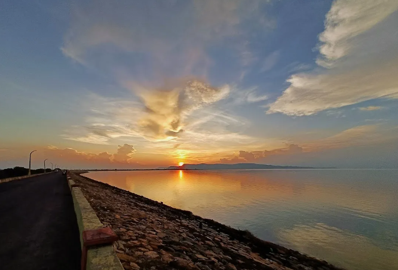

Right Dyke isn't famous. But it's unforgettable.
Most people head to the main Hirakud Dam gates. But I took the side route. A quieter, narrower path. No tourists. Just golden fields, lazy cows, and the occasional red kite hovering overhead.
I arrived at the dyke just as the sky turned to embers. The water shimmered like melted copper. A small group of boatmen waited near the edge. One looked up and asked, “Sunset or sunrise ride?” I paused, smiled, and said: “Both.”
“You don’t plan moments like this. You drift into them.”
He took me out—just me and a paddle boat into the massive calm. The reservoir is so vast that you stop seeing the shore. Just water. Sky. Silence. Occasionally, an island would appear like a thought in meditation—brief, untouched, real.
Sunset to Sunrise
He dropped me on a sandbar island. I had packed a blanket, some food, a flashlight. As the sun sank, the stars arrived in full glory. No city lights. No horns. Just the sound of small waves and a distant owl.
At 4:45 AM, I woke up to whispers of dawn. The sky wasn’t black. It was navy-blue turning lavender. And when the first orange cracked the horizon, it felt like the reservoir breathed with me.
That morning, I didn’t need Wi-Fi. Or phone. Or even coffee. I just needed that reflection of the sun on the water—so perfect it made time stop.
Plan Your Island Escape
- Start Point: FunZone Base → Right Dyke Road (~18 km)
- Ask For: Private paddle boat (~₹200–400)
- What to Bring: Power bank, mat, flashlight, food, jacket (if staying overnight)
- Photography Tip: Use wide-angle lens for stunning sunrise-water-sky shots.